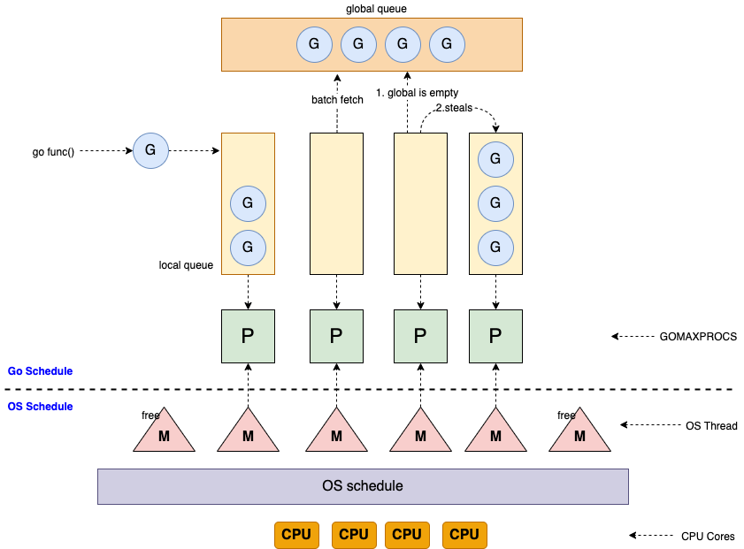

Golang 入门
摘要: 本文简要介绍了Go语言的发展历史，通过文字和源代码形式介绍Go语言基本语法、开发工具、并发模型、垃圾回收机制等。 本文作为Go语言的入门资料，读者可以通过本文快速了解Go语言的基本用法。
1. Golang 介绍
C++语言在Google内部是主要开发语言, C++执行效率高, 但C++存在一些缺点, 如学习难度大、开发低效。
其他语言如 .NET, Java, Python, 开发效率高, 执行效率低。
2007年，Google设计Go，目的在于提高在多核、网络机器（networked machines）、大型代码库（codebases）的情况下的开发效率。 当时在Google，设计师们想要解决其他语言使用中的缺点，但是仍保留他们的优点。
- 静态类型和运行时效率。（如 C ）
- 可读性和易用性。（如 Python 和 JavaScript）
- 高性能的网络和多进程。
- 垃圾回收。
Go于2009年11月正式宣布推出，版本1.0在2012年3月发布。 之后，Go广泛应用于Google的产品以及许多其他组织和开源项目, 包括 docker、kubernet、etcd、consul、flannel、tidb 等。 除了云项目外，还有像今日头条、UBER这样的公司，他们也使用GO语言对自己的业务进行了彻底的重构。
Go的三个作者分别是： Rob Pike（罗伯.派克），Ken Thompson（肯.汤普森）和 Robert Griesemer（罗伯特.格利茨默）。
- Rob Pike：曾是贝尔实验室（Bell Labs）的Unix团队，和Plan 9操作系统计划的成员。他与Thompson共事多年，并共创出广泛使用的UTF-8 字元编码。
- Ken Thompson：主要是B语言、C语言的作者、Unix之父。1983年图灵奖（Turing Award）和1998年美国国家技术奖（National Medal of Technology）得主。他与Dennis Ritchie是Unix的原创者。Thompson也发明了后来衍生出C语言的B程序语言。
- Robert Griesemer：在开发Go之前是 Google V8、Chubby 和 HotSpot JVM 的主要贡献者。
谷歌的“20%时间”工作方式，允许工程师拿出20%的时间来研究自己喜欢的项目。语音服务Google Now、谷歌新闻Google News、谷歌地图Google Map上的交通信息等，全都是20%时间的产物。Go语言最开始也是20%时间的产物。
Go 提倡少即是多(Less is more)，语言设计简单实用。
- 相比C++，Go并不包括如枚举、异常处理、继承、泛型、断言、虚函数等功能，但增加了 切片(Slice)、并发、管道、垃圾回收功能、接口等特性的语言级支持。Go 1.18 版本将支持泛型。
- 相比Java，Go原生提供了map支持，官方工具集包含代码格式化、性能调试工具、包管理功能。
Go支持协程(goroutine)，可以调度上百万的协程任务。
总结go的特点: 静态类型、静态编译、垃圾回收、并发支持、简单、安全、高效。
Go以囊地鼠（Gopher）作为它的吉祥物，go语言开发者也自称为gopher。
参考:
2. Go 安装
从 https://go.dev/dl/ 下载最新版本安装，也可以通过以下命令安装:
Mac环境安装:
curl -C - -O https://dl.google.com/go/go1.17.6.darwin-amd64.tar.gz
sudo tar -C /usr/local -xzf go1.17.6.darwin-amd64.tar.gz
Linux环境安装:
curl -C - -O https://dl.google.com/go/go1.17.6.linux-amd64.tar.gz
sudo tar -C /usr/local -xzf go1.17.6.linux-amd64.tar.gz
配置环境变量:
> sudo vi /etc/profile
export BASEDIR=/Users/myname
export GOPATH=$BASEDIR/go
export GOBIN=$GOPATH/bin
export PATH=$PATH:/usr/local/go/bin:$GOBIN
export GO111MODULE=on
# add direct to support private reporsitories, eg gitlab.
export GOPROXY=https://goproxy.cn,direct
# export GOPROXY=https://goproxy.io
export GOPRIVATE=gitlab.mycompany.com
升级:
sudo rm -rf /usr/local/go
# then install the latest
检查安装情况:
go version
# go version go1.17.6 darwin/amd64
参考:
3. Hello World 范例
Go 语言的基础组成有以下几个部分：
- 包声明
- 引入包
- 函数
- 变量
- 语句 & 表达式
- 注释
Hello World 范例:
// this is main package
package main
import "fmt"
// main func
func main() {
println("Hello, " + "World")
}
运行
# 格式化代码
go fmt .
# 运行代码
go run main.go
# Hello, World
# 编译二进制文件
go build -o main main.go
# 执行二进制文件
./main
# Hello, World
4. Golang Tools 工具
go help
Go is a tool for managing Go source code.
Usage:
go <command> [arguments]
The commands are:
bug start a bug report
build compile packages and dependencies
clean remove object files and cached files
doc show documentation for package or symbol
env print Go environment information
fix update packages to use new APIs
fmt gofmt (reformat) package sources
generate generate Go files by processing source
get add dependencies to current module and install them
install compile and install packages and dependencies
list list packages or modules
mod module maintenance
work workspace maintenance
run compile and run Go program
test test packages
tool run specified go tool
version print Go version
vet report likely mistakes in packages
5. Go 关键字符
25 个关键字:
break default func interface select
case defer go map struct
chan else goto package switch
const fallthrough if range type
continue for import return var
36 个预定义标识符：
append bool byte cap close complex complex64 complex128 uint16
copy false float32 float64 imag int int8 int16 uint32
int32 int64 iota len make new nil panic uint64
print println real recover string true uint uint8 uintptr
any
标识符: 一个或是多个字母(A~Z 和 a~z) 数字(0~9)、下划线_组成的序列，但是第一个字符必须是字母或下划线而不能是数字。
分隔符：括号 ()，中括号 [] 和大括号 {}。
标点符号：.、,、;、:、…。
程序一般由关键字、常量、变量、运算符、类型和函数组成。
6. Go 类型
- bool类型: 只可以是常量 true 或者 false。一个简单的例子：var b bool = true。
- 数字类型:
- int: 基于架构的有符号整形, 一般来说，在32位系统中是4字节，在64位系统中是8字节, 可通过
unsafe.Sizeof(n)获取一个变量的长度. - uint: 基于架构的无符号整形
- uintptr: 基于架构的无符号指针类型, 无符号整形，可以存放一个指针
- int8: 有符号 8 位整型 (-128 到 127)
- int16: 有符号 16 位整型 (-32768 到 32767)
- int32: 有符号 32 位整型 (-2147483648 到 2147483647)
- int64: 有符号 64 位整型 (-9223372036854775808 到 9223372036854775807)
- uint8: 无符号 8 位整型 (0 到 255)
- uint16: 无符号 16 位整型 (0 到 65535)
- uint32: 无符号 32 位整型 (0 到 4294967295)
- uint64: 无符号 64 位整型 (0 到 18446744073709551615)
- float32: IEEE-754 32位浮点型数
- float64: IEEE-754 64位浮点型数
- complex64: 32 位实数和虚数
- complex128: 64 位实数和虚数
- int: 基于架构的有符号整形, 一般来说，在32位系统中是4字节，在64位系统中是8字节, 可通过
- 字符类型:
- byte: 字节, 类似 uint8
- rune: 4byte的int32，对应unicode 码位字符
- string: 字符串，字节使用 UTF-8 编码标识 Unicode 文本。 Java字符串则使用UTF-16字节数组，跨语言编码转换的时候需特别注意。
- 派生类型:
- 指针类型(pointer)
- 数组类型(array)
- 切片类型(slice)
- 结构化类型(struct)
- Channel类型(chan)
- 函数类型(func)
- 接口类型(interface)
- Map类型(map)
参考:
7. Golang 变量
Go命名规则: 名字必须以一个字母（Unicode字母）或下划线开头，后面可以跟任意数量的字母、数字或下划线。 大写字母和小写字母是不同的：heapSort和Heapsort是两个不同的名字。
变量命名一般采用驼峰式，当遇到特有名词（缩写或简称，如 DNS,URL,HTML）的时候，特有名词根据是否私有全部大写或小写。
7.1. 变量定义
func main() {
// 指定类型定义
var x string = "Hello World"
println(x)
// 编译器自动判断类型
name := "wongoo"
println(name)
}
7.2. 全局变量
var x string = "Hello World"
func main() {
println(x)
}
7.3. 静态变量
const x := "Hello World"
func main() {
println(x)
const name string = "wongoo"
println(name)
}
7.4. 定义多个变量
// 每个变量单独定义并赋值
var (
a = 5
b = 10
c = 15
)
// 多个变量一起定义并赋值
var (
a, b, c = 5, 10, 15
)
// 省略模式
a, b, c := 5, 10, 15
7.5. 枚举变量
go语言不支持枚举, 一般通过定义静态变量的方式来定义枚举：
const (
ColorWhite = 0
ColorRed = 1
ColorGreen = 2
)
当变量太多时可以通过 iota 简化定义:
const (
ColorWhite = iota
ColorRed
ColorGreen
)
8. 控制语句
8.1. for 控制语句
func main() {
i := 1
for i <= 10 {
println(i)
i = i + 1
}
for j:=1; j <= 10; j++ {
println(j)
}
}
8.2. if 控制语句
if i % 2 == 0 {
// divisible by 2
} else if i % 3 == 0 {
// divisible by 3
} else if i % 4 == 0 {
// divisible by 4
}
8.3. switch 控制语句
switch i {
case 0: println("Zero")
case 1: println("One")
case 2: println("Two")
case 3: println("Three")
case 4: println("Four")
case 5: println("Five")
default: println("Unknown Number")
}
switch {
case i == 0: println("Zero")
case i == 1: println("One")
case i == 2: println("Two")
case i == 3: println("Three")
case i == 4: println("Four")
case i == 5: println("Five")
default: println("Unknown Number")
}
9. Go Array,Slice,Map
9.1. 数组 Array
var x [5]int
x[4] = 100
println(x) // [0 0 0 0 100]
println(len(x)) // 4
// 直接赋值
x := [5]int{ 98, 93, 77, 82, 83 }
9.2. slice
var x []int // 长度为0
x := make([]int, 5) // 长度为5
x := make([]int, 5, 10) // 长度为5, 容量为10
println(len(x)) // 5
println(cap(x)) // 10
x = x[:4]
println(len(x)) // 4
println(cap(x)) // 10
x = x[:10]
println(len(x)) // 10
println(cap(x)) // 10
x = x[5:]
println(len(x)) // 5
println(cap(x)) // 5
slice1 := []int{1, 2, 3}
slice2 := make([]int, 2)
copy(slice2, slice1)
println(slice1) // [1,2,3]
println(slice2) // [1,2]
println(len(slice2)) // 2
println(cap(slice2)) // 2
slice3 := append(slice2, 4, 5, 6)
println(slice3) // [1,2,4,5,6]
println(len(slice3)) // 4
println(cap(slice3)) // 6
9.3. Map
x := make(map[string]int)
x["key"] = 10
println(x["key"]) // 10
y := make(map[int]int)
y[1] = 10
println(y[1]) // 10
// 判断map中是否存在某一个key再进行操作
if v, ok := y[1]; ok {
println(v) // 10
}
// 从map删除一个key
delete(y, 1)
println(y[1]) // 0
// 直接赋值
elements := map[string]string{
"H": "Hydrogen",
"He": "Helium",
}
println(elements) // map[H:Hydrogen He:Helium]
innerMap := map[string]map[string]string{
"H": map[string]string{
"name": "Hydrogen",
"state": "gas",
},
"He": {
"name": "Helium",
"state": "gas",
},
}
println(innerMap) // map[H:map[name:Hydrogen state:gas] He:map[name:Helium state:gas]]
10. 函数 Functions
10.1. 一般函数
func add(a int, b int) int {
return a + b
}
func sub(a, b int) int {
return a - b
}
func addAndSub(a, b int) (int, int) {
return a + b, a - b
}
func sum(x ...int) int {
s := 0
for _, n := range x {
s += n
}
return s
}
func main() {
println(add(5, 2)) // 7
println(sub(5, 2)) // 3
println(addAndSub(5, 2)) // 7 3
println(sum(1, 2, 3, 4)) // 10
}
10.2. 闭包
func main() {
x := 0
increment := func() int {
x++
return x
}
println(increment()) // 1
println(increment()) // 2
}
10.3. 递归
// 阶乘
func factorial(x uint) uint {
if x == 0 {
return 1
}
return x * factorial(x-1)
}
func main() {
println(factorial(5)) // 120
}
10.3. Defer
func first() {
println("first")
}
func last() {
println("last")
}
func main() {
defer last()
defer first()
println("hello world")
}
// hello world
// first
// last
defer可以理解为 java 的try-finally.
10.4. panic & recover
func recoverPanic() {
defer func() {
r := recover()
println("recover:", r)
}()
panic("panic error")
}
func main() {
recoverPanic() // recover: panic error
}
panic可理解为java的throw new RuntimeException().recover()需要放到defer(类似java的catch块) 中才能恢复panic.
11. 指针 Pointer
func toZero(x int) {
x = 0
}
func resetZero(x *int) {
// x为int指针, *x指向heap区的int值
*x = 0
}
func main() {
x := 5
toZero(x)
println(x) // x is still 5
// 通过&符号获取x变量的指针位置
resetZero(&x)
println(x) // x is 0
}
11.1. new 操作
func one(xPtr *int) {
*xPtr = 1
}
func main() {
// new 创建一个指定类型实例, 并返回其指针
xPtr := new(int)
one(xPtr)
println(*xPtr) // x is 1
}
12. 结构体 struct
type Department struct {
Name string
Superior *Department
}
type Employee struct {
Name string
Sex int
Depart *Department
}
func (e Employee) Work() {
println(e.Name, "work")
}
func (e *Employee) Rest() {
println(e.Name, "rest")
}
func main() {
decisionMakingCommittee := &Department{Name: "Decision-making Committee"}
researchCenter := &Department{
Name: "Research Center",
Superior: decisionMakingCommittee,
}
wongoo := Employee{
Name: "wongoo",
Sex: 1,
Depart: researchCenter,
}
println(wongoo.Name, wongoo.Depart.Name) // wongoo Research Center
wongoo.Work() // wongoo work
wongoo.Rest() // wongoo rest
}
13. 接口 Interface
Go中无需显示的生命一个 type 实现了某一个接口，只要指定type拥有某个接口所有相同签名的方法，则这个类型会被当做这个接口的实现。
注意: 如果一个接口增加了方法，则其所有实现也要同时增加该方法才会被认为实现了该接口。
type Worker interface {
Work()
}
func teamWork(workers ...Worker) {
for _, w := range workers {
w.Work()
}
}
func main() {
// Employee 有实现 Work() 方法，则为 Worker 接口的实现
wongoo := Employee{
Name: "wongoo",
}
eric := Employee{
Name: "eric",
}
teamWork(wongoo, eric)
// wongoo work
// eric work
}
接口命名规范: 接口名一般用名词，可以是动词+er的形式。
type Car interface {
Start()
Stop()
Drive()
}
type Reader interface {
Read(p []byte) (n int, err error)
}
type Writer interface {
Write(p []byte) (n int, err error)
}
14. Go 继承和重写
type Employee struct {
Name string
}
func (e Employee) Work() {
println(e.Name, "work")
}
type Developer struct {
Employee // 无名称字段类型实现继承
Projects []string
}
// 实现重写
func (d Developer) Work() {
println(d.Name, "work on projects", d.Projects)
}
type Worker interface {
Work()
}
func workerWork(worker Worker) {
worker.Work()
}
func main() {
wongoo := Developer{
Employee: Employee{Name: "wongoo"},
Projects: []string{"gateway", "message"},
}
workerWork(wongoo) // wongoo work on projects [gateway message]
workerWork(wongoo.Employee) // wongoo work
}
注意: Go中无类似java中的重载, 不能包含方法名一致但参数签名不一致的方法。
接口也可以继承:
type Person interface {
Name() string
}
type Worker interface {
Person // 继承Person接口
Work()
}
15. 泛型
Go 因为一开始不支持泛型而被吐槽，但从 v1.18 版本开始可以使用泛型了。
// 在函数名后通过中括号定义类型约束，此处是类型列表
func add[T int | int32 | int64 | float32 | float64](a T, b T) T {
return a + b
}
func sub[T int | int32 | int64 | float32 | float64](a T, b T) T {
return a - b
}
func main() {
println(add(5, 2))
println(add(1.5, 1.2))
println(sub(5, 2))
println(sub(1.5, 1.2))
}
// 7
// +2.700000e+000
// 3
// +3.000000e-001
如果支持的类型多个函数都会用到，可以定义一个类型约束接口来简化代码：
// 声明一个类型约束接口
type Number interface {
int|int32|int64|float32|float64
}
// 在函数名后通过中括号定义类型约束，此处是接口类型
func add[T Number](a T, b T) T {
return a + b
}
func sub[T Number](a T, b T) T {
return a - b
}
func main() {
println(add(5, 2))
println(add(1.5, 1.2))
println(sub(5, 2))
println(sub(1.5, 1.2))
}
// 7
// +2.700000e+000
// 3
// +3.000000e-001
除了 类型列表、接口， 类型约束 还可以是关键字 any, comparable.
说明: Go 泛型并不是运行时判断, 只是编译器在前端(词法分析、语法分析、语义分析)编译阶段，将泛型编译为代码中所有类型的具体函数。
16. Go 错误处理
Go 语言通过内置的错误接口提供了非常简单的错误处理机制。
error类型是一个接口类型：
type error interface {
Error() string
}
可以在编码中通过实现 error 接口类型来生成错误信息。
函数通常在最后的返回值中返回错误信息。使用errors.New 可返回一个错误信息：
func Sqrt(f float64) (float64, error) {
if f < 0 {
return 0, errors.New("math: square root of negative number")
}
// 实现
}
// 调用方显示的判断错误并进行处理
result, err:= Sqrt(-1)
if err != nil {
println(err)
}
17. Go包
Go 中的包用于封装隔离代码模块逻辑，并控制对外可见性。 以大写字母开头的变量或函数对包外可见(exported)， 小写字母开头的变量和函数则是私有的(unexported)，仅在同一个包内可以访问。
包名和文件命名规范:
- 包名用小写,使用短命名,尽量和标准库不要冲突。
- 文件命名一律采用小写，不用驼峰式，尽量见名思义，看见文件名就可以知道这个文件下的大概内容。
例如如下文件夹结构:
.
├── main.go
├── pkg1
│ ├── pkg1.go
├── pkg2
│ ├── module.go
main.go
package main
import "pkg1"
import "pkg2"
func main(){
println(pkg1.Hello())
// println(pkg1.privateMethod()) // unexported 方法无法调用 (可以理解为private方法)
println(pkg2.GlobalVariable)
// println(pkg2.privateVariable) // unexported 变量无法访问 (可以理解为private变量)
}
pkg1.go
package pkg1
func Hello(){
println("hello")
}
func privateMethod(){
println("private")
}
module.go
package pkg2
var GlobalVariable = "exported var"
var privateVariable = "unexported var"
17.1. 内部包 internal
包管理方便了模块化，要让模块之间能够访问就需要 exported 相关的方法或变量。
但一个模块一旦 exported 了，其他所有模块都可以对其进行访问。
Go从v1.4开始引入内部包 internal包, 来进一步限制包访问权限。
.../a/b/c/internal/d/e/f包只能被包名以 .../a/b/c 开始的包访问， 而 .../a/b/g 则不可以访问。
17.2. 包初始化函数
init() 函数用于 程序运行前 的进行包初始化（自定义变量、实例化通信连接）工作.
func init() {
println("init() 1")
}
func init() {
println("init() 2")
}
func main() {
println("main()")
}
// init() 1
// init() 2
// main()
init()函数特性:
- 每个包、每个程序文件 可以同时拥有多个
init()，但不建议 - 同一个包、文件中多个
init()执行顺序, Golang 中并未明确 - 不同包的
init()执行顺序，按照 导入包的依赖关系 决定, 被导入包的init()会优先执行 init()不能被其他函数调用，而自动 在main函数执行前 被调用- 执行顺序总结： import –> const –> var –> init() –> main()
18. Golang 核心包
Go包括诸多核心包，具体可以参考: https://github.com/golang/go/tree/master/src . 下面列举结构常用包的一些用法。
18.1. strings 包
strings.ToLower("TEST") // "test"
strings.ToUpper("test") // "TEST"
strings.Join([]string{"a", "b"}, "-") // "a-b"
strings.Contains("test", "es") // true
strings.Count("test", "t") // 2
strings.HasPrefix("test", "te") // true
strings.HasSuffix("test", "st") // true
strings.Index("test", "e") // 1
strings.Repeat("a", 5) // "aaaaa"
strings.Split("a-b-c-d-e", "-") // []string{"a","b","c","d","e"}
strings.Replace("aaaa", "a", "b", 2) // "bbaa"
arr := []byte("test") // 字符串转字节数组
str := string([]byte{'t','e','s','t'}) // 字节数组转字符串
18.2. io 包
io 包 定义了基本的两个接口 Reader 和 Writer,
type Reader interface {
Read(p []byte) (n int, err error)
}
type Writer interface {
Write(p []byte) (n int, err error)
}
io包其下的方法都主要围绕这两个接口进行操作，更多接口参考 https://pkg.go.dev/io.
func Copy(dst Writer, src Reader) (written int64, err error)
func CopyBuffer(dst Writer, src Reader, buf []byte) (written int64, err error)
func CopyN(dst Writer, src Reader, n int64) (written int64, err error)
func ReadAll(r Reader) ([]byte, error)
func ReadAtLeast(r Reader, buf []byte, min int) (n int, err error)
func ReadFull(r Reader, buf []byte) (n int, err error)
func WriteString(w Writer, s string) (n int, err error)
18.3. os包
文件读写:
func writeFile() {
file, err := os.Create("test.txt")
if err != nil {
// handle the error here
return
}
defer file.Close()
file.WriteString("test")
}
func readFile() {
bs, err := os.ReadFile("test.txt")
if err != nil {
// handle the error here
return
}
str := string(bs)
println(str)
}
19. Go 测试
Go 测试代码会单独放到以 _test 结尾的测试文件中。
比如 util.go:
package util
func sub(a,b int) int {
return a - b
}
func Add(a,b int) int {
return a + b
}
util_test.go:
package util
import (
"testing"
"github.com/stretchr/testify/assert"
)
func TestSub(t *testing.T) {
assert.Equal(t, 3, sub(5, 2))
}
util2_test.go:
// 测试文件package可以和源码package一样,也可以不一样
package util_test
import (
"util"
"testing"
"github.com/stretchr/testify/assert"
)
func TestAdd(t *testing.T) {
assert.Equal(t, 5, util.Add(2, 3))
}
运行测试:
go test -v
# === RUN TestSub
# --- PASS: TestSub (0.00s)
# === RUN TestAdd
# --- PASS: TestAdd (0.00s)
# PASS
# ok github.com/wongoo/gdemo/temp 0.008s
20. Go 模块管理
# 初始化项目模块
go mod init <project-path>
# 模块整理,检查源码，添加需要的依赖, 删除不再使用的依赖
go mod tidy
# 下载依赖包到vendor目录
go mod vendor
go 模块依赖信息会放到 go.mod 文件中, 依赖包的校验码信息存放在 go.sum 文件中.
如 go.mod:
module github.com/vogo/grunner
require github.com/stretchr/testify v1.7.0
如 go.sum:
github.com/davecgh/go-spew v1.1.0 h1:ZDRjVQ15GmhC3fiQ8ni8+OwkZQO4DARzQgrnXU1Liz8=
github.com/davecgh/go-spew v1.1.0/go.mod h1:J7Y8YcW2NihsgmVo/mv3lAwl/skON4iLHjSsI+c5H38=
github.com/pmezard/go-difflib v1.0.0 h1:4DBwDE0NGyQoBHbLQYPwSUPoCMWR5BEzIk/f1lZbAQM=
github.com/pmezard/go-difflib v1.0.0/go.mod h1:iKH77koFhYxTK1pcRnkKkqfTogsbg7gZNVY4sRDYZ/4=
github.com/stretchr/objx v0.1.0/go.mod h1:HFkY916IF+rwdDfMAkV7OtwuqBVzrE8GR6GFx+wExME=
github.com/stretchr/testify v1.7.0 h1:nwc3DEeHmmLAfoZucVR881uASk0Mfjw8xYJ99tb5CcY=
github.com/stretchr/testify v1.7.0/go.mod h1:6Fq8oRcR53rry900zMqJjRRixrwX3KX962/h/Wwjteg=
gopkg.in/check.v1 v0.0.0-20161208181325-20d25e280405 h1:yhCVgyC4o1eVCa2tZl7eS0r+SDo693bJlVdllGtEeKM=
gopkg.in/check.v1 v0.0.0-20161208181325-20d25e280405/go.mod h1:Co6ibVJAznAaIkqp8huTwlJQCZ016jof/cbN4VW5Yz0=
gopkg.in/yaml.v3 v3.0.0-20200313102051-9f266ea9e77c h1:dUUwHk2QECo/6vqA44rthZ8ie2QXMNeKRTHCNY2nXvo=
gopkg.in/yaml.v3 v3.0.0-20200313102051-9f266ea9e77c/go.mod h1:K4uyk7z7BCEPqu6E+C64Yfv1cQ7kz7rIZviUmN+EgEM=
依赖模块默认会从官方的仓库下载, 可能会比较慢，可以通过创建私有go proxy提升速度。
21. Go 并发
21.1. 协程 goroutine
不同于操作系统级别的线程Thread, Go语言提供轻量级的语言级线程 —— 协程(goroutine), 可以支持上百万级的协程调度。
启动goroutine:
// 创建一个匿名函数并启动一个协程去执行
go func() {
// do something
}()
协程启动后将有Go调度器去调度异步执行。
21.2. GMP模型
GMP是 Groutine、Machine、Processor的缩写，是Go调度器的核心:
- G : Groutine 协程
- M : Machine 系统线程
- P : Processor 处理器
GMP调度 就是循环在与 P(处理器) 绑定的 M(系统线程) 上寻找可执行的 G(协程).

Go调度器协程队列:
- local queue: P 的本地队列, 同全局队列类似，存放等待运行的 G。
- global queue：全局队列, 存放等待运行的 G
创建时机:
- G: 通过
go关键字创建 - P: 程序启动时创建，并保存在数组中
- M: 由 P 创建或者唤醒 M
调度策略:
- P 创建或者唤醒 M 去事件循环执行G
- M 运行 G，G 执行完之后，M 会从 P 获取下一个 G，不断重复下去。
- 新建 G 时，G 优先加入到 P 的本地队列，如果队列满了，则会把本地队列中一半的 G 移动到全局队列。
- M 会先从 P 的本地队列获取 G，P 的本地队列为空时，M 也会尝试从全局队列拿一批 G 放到 P 的本地队列。
- 当本地队列和全局队列都为空时, 会尝试从其他 P 的本地队列偷一半放到自己 P 的本地队列。
- 当一个 G 阻塞过长时间，通过抢占调度的方式让 G 挂起让出 P , 好让其他 G 运行,
数量问题:
- P数量: 最多有
GOMAXPROCS(可配置) 个, 默认为CPU核心数. - M数量: 默认限制是10000 , 超出会报错
- G数量: 一般没有限制 ,理论上受内存影响
- 本地队列长度: 固定256
- 全局队列长度: 无限长度
参考:
21.3. 锁
21.3.1. sync.Mutex 互斥锁
var l sync.Mutex
var a string
func f() {
a = "hello, world"
// 解锁
l.Unlock()
}
func main() {
// 加锁
l.Lock()
go f()
// 加锁
l.Lock()
// 确保能正常打印 hello world
println(a)
}
21.3.2. sync.RWMutex 读写锁
读锁和写锁互斥, 读锁和读锁可以并存。
var l sync.RWMutex
var a int32
func w() {
// 写锁
l.Lock()
defer l.Unlock()
println("incr")
atomic.AddInt32(&a, 1)
}
func r() {
// 读锁
l.RLock()
defer l.RUnlock()
println(atomic.LoadInt32(&a))
}
func main() {
for i := 0; i < 6; i++ {
go r()
go w()
}
<-time.After(time.Second)
}
// 0
// incr
// 1
// 1
// incr
// 2
// incr
// 3
// incr
// 4
// incr
// incr
注意: go中对开发人员无线程的概念，也不提供协程的id，没有可重入锁，同一个协程中重复请求锁将发生死锁错误。
21.4. 通道Channel
Channel 是 Golang 在语言级别提供的 goroutine 之间的通信方式，可以使用 channel 在两个或多个 goroutine 之间传递消息。
Channel 是类型相关的，也就是说，一个 channel 只能传递一种类型的值，这个类型需要在声明 channel 时指定。
非缓冲通道:
// 创建通道
var c = make(chan string)
var a string
func f() {
a = "hello, world"
// 向通道发送消息
c <- "ok"
}
func main() {
go f()
// 阻塞等待通道消息
r := <-c
println(r)
// 接收到通道消息时, a已被赋值
println(a)
}
// ok
// hello, world
缓冲通道:
// 创建通道
var c = make(chan int32, 2)
var a int32
func producer() {
i := atomic.AddInt32(&a, 1)
// 向通道发送消息
c <- i
println("produce ", i)
}
func consumer() {
for i := 0; i < 4; i++ {
// 消费通道消息
println("consume ", <-c)
}
}
func main() {
// 先向通道发送2笔
producer()
producer()
// 再先向通道发送时超过了通道缓冲区长度，会被阻塞，需等待消费后才可以往缓冲区写
go producer()
go producer()
<-time.After(time.Second)
// 开始消费
go consumer()
<-time.After(time.Second)
}
// produce 1
// produce 2
// consume 1
// consume 2
// consume 3
// consume 4
// produce 3
// produce 4
参考:
21.5. select 语法
select 的语法与 switch 的语法非常相似，由 select 开始一个新的选择块，每个选择条件有 case 语句来描述。 其大致的结构如下：
select {
case <-chan1: // 如果 chan1 成功读取到数据，则执行该 case 语句
case chan2 <- 1: // 如果成功向 chan2 写入数据，则执行该 case 语句
default: // 如果上面的条件都没有成功，则执行 default 流程
}
22. Go 反射
go语言也支持反射，可在运行时更新和检查变量的值、调用变量的方法和变量支持的内在操作。
type Person struct {
Name string
Sex int `json:"name"` // 带有tag的字段
}
wongoo := Person{Name: "wongoo", Sex: 1}
typ := reflect.TypeOf(wongoo) // 获取结构体实例的反射类型对象
println(typ.Name(), typ.Kind()) // Person struct
// 遍历结构体所有成员
for i := 0; i < typ.NumField(); i++ {
field := typ.Field(i) // 获取成员的结构体字段类型
fmt.Printf("name: %v tag: %v\n", field.Name, field.Tag) // 输出成员名和tag
// name: Name tag: ''
// name: Type tag: 'json:"type" id:"100"'
}
println(wongoo) // {wongoo 1}
value := reflect.Indirect(reflect.ValueOf(&wongoo)) // 反射获取实例值对象
nameValue := value.FieldByName("Name") // 获取实例字段的值对象
name := nameValue.Interface() // 通过反射获得变量值
println(name) // wongoo
nameValue.SetString("Yang") // 反射修改变量值
println(wongoo) // {Yang 1}
也可以运行时创建动态函数，实现类似代理的效果:
// Joiner 定义一个方法类型
type Joiner func(i int, a string) string
func main() {
// 获得方法反射类型
joinerType := reflect.TypeOf((*Joiner)(nil)).Elem()
// 定义方法处理函数
dynamicProxyJoiner := func(args []reflect.Value) (results []reflect.Value) {
i := args[0].Int()
a := args[1].String()
r := fmt.Sprintf("%d: %s", i, a)
return []reflect.Value{reflect.ValueOf(r)}
}
// 反射生成函数定义
fn := reflect.MakeFunc(joinerType, dynamicProxyJoiner)
// 调用函数
results := fn.Call([]reflect.Value{reflect.ValueOf(200), reflect.ValueOf("ok")})
result := results[0].String()
println(result) // 200: ok
}
23. Go GC
Go GC算法基本特征：
- 非分代
- 非紧缩
- 写屏障
- 并发标记
Go采用三色标记和写屏障：
- 起初所有的对象都是白色；
- 扫描找出所有可达对象，标记为灰色，放入待处理队列；
- 从队列提取灰色对象，将其引用对象标记为灰色放入队列,自身标记为黑色;
- 写屏障监视对象的内存修改，重新标色或放回队列；


关于上图有几点需要说明的是。
- 首先从 root 开始遍历，root 包括全局指针和 goroutine 栈上的指针。
- mark 有两个过程。
- 从 root 开始遍历，标记为灰色。遍历灰色队列。
- re-scan 全局指针和栈。因为 mark 和用户程序是并行的，所以在过程 1 的时候可能会有新的对象分配，这个时候就需要通过写屏障（write barrier）记录下来。re-scan 再完成检查一下。
- Stop The World 有两个过程。
- 第一个是 GC 将要开始的时候，这个时候主要是一些准备工作，比如 enable write barrier。
- 第二个过程就是上面提到的 re-scan 过程。如果这个时候没有 stw，那么 mark 将无休止。
参考：
24. Go 和 Java 性能对比
一般情况下 Go 程序相比Java程序在资源利用率上更好，特别是内存利用率上。
笔者曾经拿相同功能的HTTP网关程序（解析、路由、转发）在同一台主机上进行测试：
TPS:
- Java网关: 2569
- Go网关: 6386
CPU利用率:
- Java网关: 70%
- Go网关: 50%
从TPS数据看，Go网关 是 Java网关 的3倍左右, 且CPU消耗更低。
A. 编辑历史
- 2022-02-17, wangoo, 增加泛型、select用法、内部包 internal、包初始化函数
- 2022-02-16, wangoo, 初版